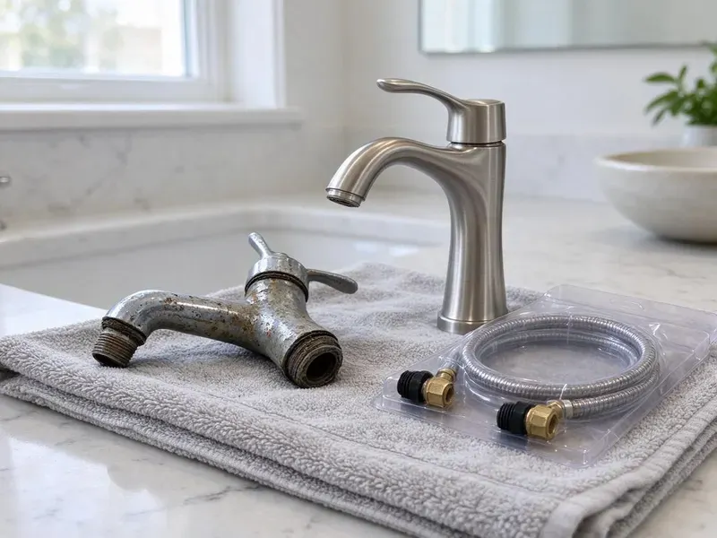

Gas Water Heater Replacement in Douglas, WY
Get hot water back fast with gas water heater replacement in Douglas, WY, including new flex connectors, expansion tanks and venting checks.
- Same-Day Tank Swaps
- Locally Owned
- Upfront Quotes
- Trusted Brands

Gas Water Heater Failing? Replace It in Douglas, WY.
We stock popular tank sizes on our trucks, so you are not waiting days for parts.
Local Gas Water Heater Replacement in Douglas, WY
A new gas water heater should match how your household actually uses hot water, not just the label on the old tank. We ask about showers, tubs and laundry before we size it. Then we install it to code.
Our expertise includes:
- Atmospheric, power vent and direct vent gas tank installs
- Code-Compliant Venting and Gas Line Work
- Thermal expansion tank installs sized to your water pressure

Additional Plumbing Replacement Services in Douglas, WY
When repairs are no longer enough, our replacement services in Douglas, WY deliver modern, efficient equipment installed right.


Customers
Why Choose JKV Plumbing for Gas Water Heater Replacement in Douglas, WY?
Picking the unit is half the job. The rest is the install itself, done level and tight with good draft, so the heater runs efficiently for years. We handle both parts.
- Upfront Pricing, You get a flat installed price that covers the tank, parts, permit and haul-away.
- Lower Gas Bills, A new tank uses less gas than one that is ten years old and full of sediment.
- Safety First, Our technicians follow fuel gas code and leak test every connection before the burner is lit.
Citywide Coverage
Housing across Douglas runs from older homes with closet heaters on B-vent to new builds with power vents through the wall. Our crews see every type. The approach changes, the standard does not.
Experienced Team
Each tech at JKV Plumbing can safely shut down, disconnect and cap a gas line, then reconnect and test it to Wyoming code. It is basic, and it matters. Then we follow the manufacturer's specs.
Safety-First Approach
Every job starts at the shutoff valve. Every replacement we do meets the fuel gas and venting code adopted in Douglas, WY, and we check combustion air before lighting the burner. Then we test for leaks.
Trusted Certified Douglas Plumbing Services Professionals
At JKV Plumbing, we take pride in licensed, certified plumbing services throughout Douglas, WY. Credentials matter in this trade. Our plumbers hold recognized industry credentials, and they follow strict safety and quality rules on every repair, installation and maintenance call we run.
Call Us Now PHCC Plumbing Contractor Recognition
PHCC Plumbing Contractor Recognition Better Business Bureau (BBB) Accreditation
Better Business Bureau (BBB) Accreditation Angi Certified Pro
Angi Certified Pro ISO 9001 Quality Management Certification
ISO 9001 Quality Management CertificationGas Tanks We Replace in Douglas, WY
Emergency Gas Water Heater Replacement in Douglas, WY
Water on the floor around the tank usually means the inner tank has rusted through, and that is not a repair. Shut the cold supply valve on top and turn the gas control to off. After that, give us a call. Common sizes are on the truck, so same-day hot water is normal.

Thermal Expansion Tank Installation in Douglas
Closed systems are the reason expansion tanks exist. A pressure regulator or backflow preventer on the main stops heated water from pushing back to the street, so pressure climbs every time the burner runs. Code commonly calls for an expansion tank. We precharge it to your house pressure.
40 and 50 Gallon Tank Replacement in Douglas
Forty and fifty gallon gas tanks are the workhorse in most Wyoming homes, and a leak at the bottom seam means the tank is finished. Current tanks are often taller and wider. We measure the closet before ordering. Most of these swaps take two to three hours.
Commercial Gas Water Heater Service in Douglas, WY
Higher BTU inputs on commercial units mean bigger gas lines and larger vent sizes, plus a permit and inspection in most jurisdictions. That is all part of the job. Downtime stays short.
Bradford White Tank Replacement in Douglas
Most of the tanks on our trucks are Bradford White, partly because their Defender combustion system and ICON gas valve are simple to service. We help you match model to demand. The install meets current code.
Standard Gas Water Heater Replacement in Douglas
A standard 40 or 50 gallon atmospheric tank is what most homes have, and swapping one like for like is a two to three hour job when the venting and gas line are in good shape. The old tank gets drained and hauled off, and the new one goes on a pan. New flex connectors every time. We soap-test the gas joints and check the draft hood with the burner lit.
Power Vent Water Heater Replacement in Douglas
Blower motors and pressure switches are the weak points on power vent tanks. A second blower failure on an older tank is usually the point where a new heater makes more sense. We confirm a dedicated outlet first.

Commercial Gas Tank Replacement in Douglas
Laundromats and multi-unit buildings work commercial tanks so hard that replacement comes on a predictable schedule rather than as a surprise. We plan the swap around your slow hours. Some jobs need added vent or gas work.
Gas Water Heater Replacement Near Me in Douglas, WY
Permits and inspections are routine for us in Douglas. We can tell you right away whether your venting and gas line will work with a new tank, or whether something has to change first. The price is firm before we start.
As a local Wyoming company, we know the housing stock around Douglas, from 1960s ranch homes with closet heaters to new builds with garage platforms. Diagnosis goes faster that way. Most of the time we know what is behind the closet door before we open it.
JKV Plumbing at a Glance
- Fully licensed plumbing team covering Douglas, WY
- Same-day appointments and 24/7 emergency response
- Upfront, flat-rate pricing before work begins
- 4.9-star rated by 782+ Wyoming customers
Douglas Map
Douglas Information
- Population
- 6,449
- Area codes
- Local
- Service area
- Douglas and towns within a 40 mile drive
- Nearby
- Casper, Torrington, Laramie, Gillette
For homes in Douglas, WY, a gas water heater that drafts correctly and gets flushed once a year lasts longer.
Talk to a Plumber
Reach out to JKV Plumbing for honest, reliable plumbing from people who know the trade in Douglas, WY.
Our Specialized Plumbing Services in Douglas, WY
At JKV Plumbing, we handle the full list of plumbing services across Douglas, WY. From leak detection to full system installs, our team works fast and charges fair prices on homes and commercial properties alike. Take a look at our core services below:


What to Expect on a Gas Tank Install in Douglas, WY
Here is what you can expect when you choose JKV Plumbing for your gas water heater replacement in Douglas, WY.
Call or Book
Call (307) 393-4049 or use the online form. We ask about your tank, its location and what it is doing.
Look at the Setup
A licensed tech visits your Douglas home, checks the gas line and vent and recommends a replacement.
Install the Tank
We remove the old heater and set the new one with new gas, water and vent connections, all to code.
Frequently Asked Questions About Gas Water Heater Replacement in Douglas
A standard 40 or 50 gallon gas tank usually runs $1,800 to $3,200 installed, haul-away and basic code upgrades included. Larger 75 gallon or power vent units cost $3,000 to $4,800. We give a firm price first.
Bradford White is our most common tank, with Rheem and Noritz also on the list. We help you choose based on budget and how much hot water your family uses on a typical weekday morning. All three are well supported.
Manufacturer warranties run 6 to 12 years on the tank, depending on the model. We also warranty our installation work, including the connections and vent piping. Parts coverage is shorter.
Annual flushing and an anode check every few years are the main things. Most gas tanks die from sediment, which sits on the burner side and cooks the steel until it fails. Have it looked at now and then.
A permit is required in most of Douglas and Wyoming for this work. It covers the gas connection and venting, and the inspector checks that the relief valve discharge and strapping meet code where they apply. We file it for you.
Usually, yes. A new tank replacing one that is over 10 years old will use less gas, partly from better insulation and partly because the old one is full of sediment. Condensing models save the most.
Yes, in most of Douglas, WY. Gas water heater replacement usually requires a permit because it involves gas piping and venting, and an inspector may check the install afterward. We pull it for you.
Most swaps run three to five hours. Power vent conversions or relocations take longer, often a full day, because of new venting and gas work. We tell you the timeline first.
Hear From Customers Who Hired Our Plumbing Experts

Megan L.
Our upstairs tub drained so slowly that every shower turned into a bath. JKV Plumbing pulled a wad of hair out of the stopper and then snaked the line past the trap. Three months later it still drains fast.
Drain Cleaning · Gillette, WYRachel N.
Hard water was leaving white crust on every faucet and our dishwasher was struggling. The tech tested the water, recommended a softener sized for a family of five, and installed it with a bypass valve in one afternoon. The spots on our glasses are gone.
Water Softener · Torrington, WY
Tyler J.
We bought a taller comfort height toilet for my dad, who just had knee surgery. The plumber pulled the old one, found the flange was cracked, and replaced it before setting the new bowl. Took about two hours.
Toilet Installation · Douglas, WY
Jessica T.
We were adding a gas range in a kitchen remodel and needed a new line run from the meter. The plumber pulled the permit, ran the pipe through the crawl space, and had it inspected and approved within the week.
Gas Line Repair · Rawlins, WY
Kevin O.
Before buying our house I paid for a sewer camera inspection. JKV Plumbing found a belly in the line that held standing water about forty feet from the cleanout. We used the video to get the sellers to fix it before closing.
Sewer Camera Inspection · Rawlins, WY
Patricia H.
We had a slab leak that two other companies could not find. JKV Plumbing located it in under an hour with a listening device. They rerouted the line through the attic instead of breaking up the floor, so we kept our kitchen tile.
Slab Leak Repair · Casper, WY